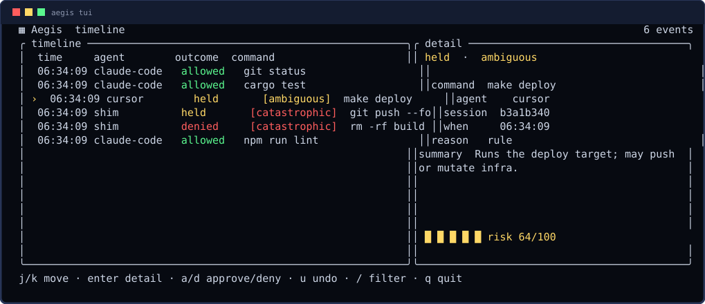
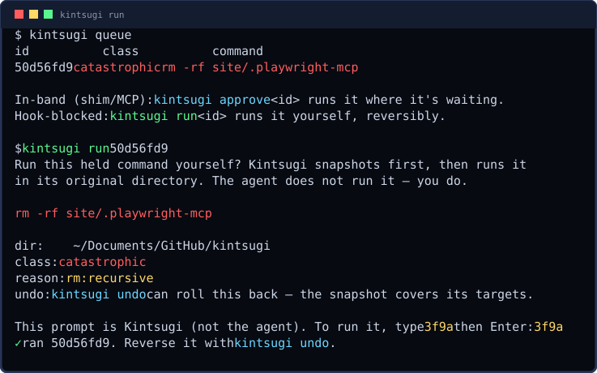

FEATURES
Every feature with a real captured frame — the gate, the timeline, the TUI, the queue, undo, setup, every-CLI hooks, running a blocked command yourself, and how it decides. No mockups.
1 > the gate — held before it runs
Catastrophic and ambiguous commands pause with a calm "hold card": one plain-English line, the raw command verbatim, three keys. [a]llow once · [d]eny · [r] always-allow-here.
──────────────────────────────────────────────────────────── ⚠ Kintsugi hold — This command is catastrophic and cannot be undone. recursively deletes files and directories. This is hard or impossible to undo. rm -rf src [a] allow once [d] deny [r] always allow here ────────────────────────────────────────────────────────────
2 > the timeline — one cross-agent log
Every command from every wired agent on a tamper-evident, hash-chained record. kintsugi log for a quick scroll; the TUI for live scrubbing.
time agent outcome command 02:31:27 shim held [catastrophic] rm -rf src 02:31:27 shim denied [catastrophic] rm -rf src 02:31:27 shim held [catastrophic] rm -rf src
3 > the live TUI
A real ratatui app: bordered timeline + detail panels, a risk gauge, severity colors, selection highlight. Keyboard: j/k move, enter detail, a/d approve/deny, u undo, / filter, q quit.

4 > the approval queue — agents proceed
Held commands are queued, not dropped. Approve from the CLI, the TUI, or let the agent wait in-band — once you approve, the command runs and the result returns, so the agent keeps going.
id class command 50d56fd9 catastrophic rm -rf src Approve with `kintsugi approve <id>` or deny with `kintsugi deny <id>`.
5 > undo — nothing is unrecoverable
Before an allowed destructive op, Kintsugi snapshots the paths it will touch (reflink copy-on-write, plain-copy fallback). kintsugi undo restores the last action; --session restores the whole run.
✓ undid `rm -rf src` (1 path(s) restored) Restored 1 snapshot(s). Note: undo covers files only — not network calls, external APIs, or already-pushed commits.
6 > one-command setup + status
kintsugi init detects your agents, wires the hook / MCP / shim, and starts the daemon. kintsugi status shows health — including the hash chain and the panic kill-switch.
kintsugi init ✓ shim: linked 9 commands in ~/.local/share/kintsugi/shims • no agent dirs detected (~/.claude, ~/.codex, …) ✓ daemon started on ~/run/kintsugi.sock Done. Try: kintsugi status
kintsugi 0.1.0 daemon: running socket: ~/run/kintsugi.sock log: ~/.local/share/kintsugi/events.db events: 3 chain: intact
Ready to wire it up? → install.
7 > works with every CLI — one native hook each
Kintsugi isn't a plug-in for one tool. Every major agent CLI exposes a pre-tool hook, and kintsugi init wires each natively, so a held command pauses the agent itself — not just a $PATH shim. One binary, kintsugi-hook --agent <id>, speaks every dialect.
Claude Code
PreToolUse · ~/.claude/settings.json
Qwen Code
PreToolUse · ~/.qwen/settings.json
Gemini CLI
BeforeTool · ~/.gemini/settings.json
Copilot CLI
preToolUse · ~/.copilot (fail-closed)
Cursor CLI
beforeShellExecution · ~/.cursor/hooks.json
Codex CLI
[[hooks.PreToolUse]] · ~/.codex/config.toml
OpenCode
tool.execute.before plugin · bridges to the hook
Any other tool / raw shell
the $PATH shim, or the kintsugi-exec MCP server
8 > when Kintsugi blocks something — run it yourself
A catastrophic command is denied to the agent (an in-agent "allow" would skip the snapshot). The agent stops and you decide. kintsugi run <id> runs it yourself, reversibly — snapshot first, confirm with a code typed at your terminal, then execute in its original directory. kintsugi undo rolls it back.

kintsugi run <id>
You run a hook-blocked command, reversibly. Snapshots the files, runs the exact command, undoable. Confirmed at your real terminal — the agent can't self-approve.
kintsugi approve <id>
For shim / MCP holds, the waiting call runs it. (For a hook block, approve only records — use kintsugi run.)
kintsugi deny <id>
Drop it. Nothing runs.
Honest about reversibility: for bounded targets (a directory, named files) kintsugi undo fully restores them; for unbounded ones (globs, $VARS, the root, devices) a snapshot can't cover everything — Kintsugi says so before you confirm, and the filesystem-watcher backstop is the net. The terminal prompt is a strong speed bump, not a sandbox against a malicious local process.
9 > how it decides — deterministic AST analysis
The block decision is LLM-free: fixed rules a human wrote, never a model guessing. What makes it trustworthy is that Kintsugi reads the real shell structure of a command, not its raw text.
Two passes, worst-wins
A fast tokenizer and a true bash AST parser (brush-parser, pure-Rust) — Kintsugi takes the more cautious verdict. The AST sees what substring matching can't.
Catches hidden danger
Commands buried in substitutions $(…), backticks, here-docs, subshells, and if/for/while blocks are surfaced — echo "$(rm -rf /)" is caught, not waved through.
Fails toward caution
A line Kintsugi can't fully parse is held, never assumed safe. A parse failure can only add caution. The hard rule, gated by a golden corpus: zero catastrophic-classified-as-safe.
Industry-standard basis
Real AST static analysis (what ShellCheck and shell tooling use), with categories in the spirit of MITRE ATT&CK + GTFOBins — not the brittle regex scanning that lets quoting and expansion slip through.
See it for yourself — this runs nothing:
$ kintsugi test "cd build && rm -rf ../dist" command: cd build && rm -rf ../dist class: ⛔ CATASTROPHIC (rule: rm:recursive) with you: blocked — the agent won't run it; you'd run it yourself, reversibly. Kintsugi sees these commands: • cd build • rm -rf ../dist Dry run: nothing was executed, logged, or sent anywhere.
kintsugi test "<command>" shows the class, the rule that fired, what would happen, and the exact commands Kintsugi parses out of your line — a safe way to explore the rules.